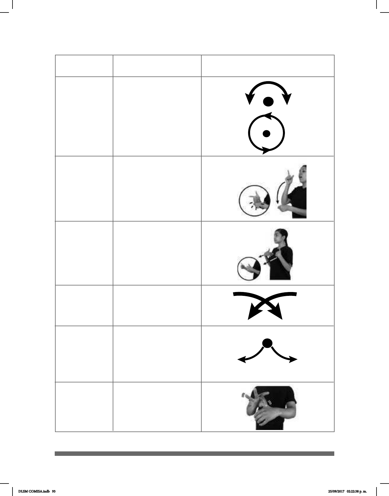

93
Rotación de
muñeca (rot)
Choque (ch)
Cruzado (crz)
Simétrico (sim)
Prensar
Doblar (dob)
La muñeca o el
antebrazo giran y
cambia la orientación
de la mano.
Las manos se
encuentran y se tocan.
Los antebrazos se
cruzan hacia el centro
y las manos llegan a un
punto cercano.
Las manos parten de
un mismo punto y luego
se abren hacia abajo,
hacia arriba o
hacia los lados.
Los dedos índice y pul-
gar sujetan la otra mano
u otra parte del cuerpo.
El pulgar se mantiene
inmóvil mientras los
otros cuatro dedos se
cierran contra la palma.
MOVIMIENTO
DESCRIPCIÓN DEL
MOVIMIENTO
IMAGEN
DLSM COMISA.indb 93 25/09/2017 02:22:38 p. m.